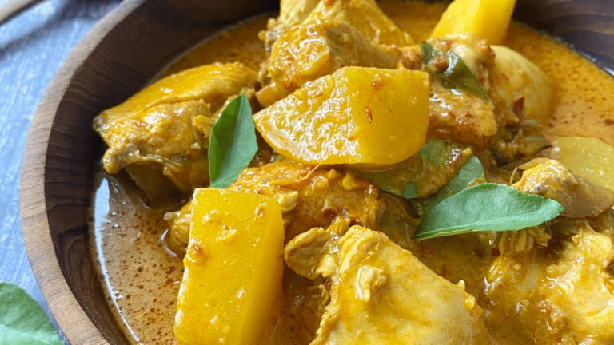

Chicken Curry Pinoy Style

Ingredients:
- 1 pound boneless, skinless chicken thighs, cut into bite-sized pieces
- 1 tablespoon vegetable oil
- 1 onion, chopped
- 4 cloves garlic, minced
- 1 (1-inch) piece ginger, grated
- 1 tablespoon turmeric powder
- 1 teaspoon paprika
- 1/2 teaspoon ground cumin
- 1/4 teaspoon chili powder (optional, for a hint of spice)
- 1 (13.5 oz) can coconut milk
- 1 cup chicken broth
- 1/4 cup fish sauce
- 1 tablespoon soy sauce
- 1 tablespoon brown sugar
- 1 small potato, peeled and cubed
- 1 carrot, peeled and sliced
- 1 bell pepper, sliced (optional)
- 1/2 cup green beans, trimmed and cut into 1-inch pieces
- Salt and freshly ground black pepper to taste
- Chopped fresh cilantro, for garnish
- Steamed white rice, for serving